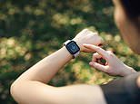
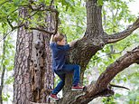

DAILY MAIL
Health
Browse headlines from the saved 26 October 2026 homepage.
Health
Inside the astonishing rise in kidney stones in seemingly 'fit and healthy' patients - as experts reveal why the trendy diet with too much PROTEIN could be to blame
Weeks before her daughter's wedding, Sarah Wolfensohn noticed the tell-tale waves of colicky pain building in her left side and lower back.
Health
PROFESSOR TIM SPECTOR: Why I believe changing my diet could've prevented my stroke at 53 and delayed my mother's dementia - and how what I've learned could transform your health in just six weeks
For 15 years, Professor Tim Spector has championed the power of diet to improve our physical health.
Health
I contracted tinnitus five years ago and it's getting worse. It makes me dizzy, I can't sleep and my GP tells me nothing can be done. DR SCURR reveals why people suddenly develop the condition... and why distraction is the key treatment
I've had tinnitus since contracting Covid five years ago but it's got worse. My doctor says nothing can be done. Can you help? Dr Martin Scu

Health
Can an app really tell if you're heading for the menopause - and ease symptoms? There's only one benefit of the tech, but plenty of risks, say experts
The hormonal change is now an industry set to be worth £19 billion by 2030 - and tech companies are cashing in.

Health
Revealed: The childhood activities that make for happier, brighter kids - the riskier the better, scientists say
Kids who climb trees, ride bikes down hill and splash in outdoor streams have better physical and mental health, as well as sharper learning